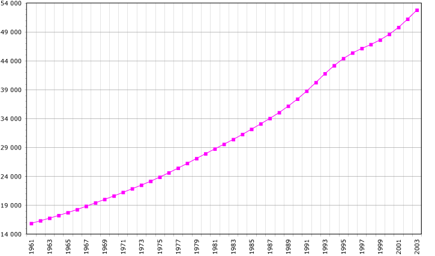

Nascite in Italia al secondo(0,012) (un bambino ogni 83 secondi)
0
Nascite in congo al secondo(0,10) (un bambino ogni 10 secondi)
0
Quando nasce un figlio bisogna attrezzarsi. E non solo psicologicamente. Appena nato il bebè chiede bavaglini, pannolini, tutine, culla, passeggino, marsupio e seggiolone e così via, per un totale di spesa annua che oscilla da un minimo di 7.123,01 euro ad un massimo di 15.348,93 euro I genitori risparmiano come possono: comprano online, si fanno aiutare dai nonni e riciclano l’usato, ben consci che là dove riescono a risparmiare recupereranno un po’ delle spese mediche.
Le nascite in Congo sono quasi 8 volte superiori a quelle Italiana nonostante le condizioni economiche e sanitarie del paese siano peggiori dell'Italia e quasi critiche.
La popolazione è quintuplicata nell'ultimo mezzo secolo, passando dai 16,5 milioni del 1960 agli oltre 90 milioni attuali. Nel 2025 gli abitanti della Repubblica congolese ammonteranno, secondo le proiezioni dell'US Census Bureau, a 100 milioni.
